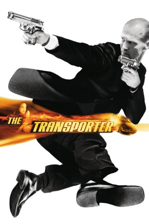
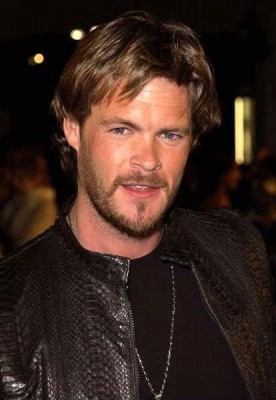

#869 The Transporter 1
 
 IMDB-Wertung: 6.8 / 10
IMDB-Wertung: 6.8 / 10  Metascore: 51
Metascore: 51 
Der für die kriminelle Klientel arbeitende Kurierfahrer Frank Martin plant alle Einsätze bis ins kleinste Detail und vergisst nie seine beiden ehernen Regeln: Stelle keine Fragen und mache niemals ein Paket auf. Bis zu jenem Tag, als der ultralässige Kerl mit seinen Prinzipien bricht und das zappelnde Frachtstück in seinem Kofferraum öffnet. Plötzlich hat er die schöne Lai am Hals, die gegen einen Menschenhändlerring kämpft. Und als wäre das nicht genug, ist plötzlich auch noch eine schießfreudige Mafiosi-Bande hinter dem gut gebauten Stoiker her.
Jahr: 2002
Dauer: 92 Minuten
FSK: 16
Land: Frankreich Studio: TOBIS FilmTonspuren:
Untertitel: Deutsch, Englisch,
Auflösung: 1080p (1920x818) Größe: 7792 MB
Genre: Action, Krimi, Thriller
Regisseur: Louis Leterrier,  Corey Yuen
Corey Yuen
Drehbuch: Luc Besson, Robert Mark Kamen
Soundtrack: Stanley Clarke
Darsteller:
 Jason Statham als Frank Martin
Jason Statham als Frank Martin Qi Shu als Lai
Qi Shu als Lai-  Matt Schulze als Wall Street
 François Berléand als Inspector Tarconi
François Berléand als Inspector Tarconi Ric Young als Mr. Kwai
Ric Young als Mr. Kwai- Cameron Watson als Official
- Doug Rand als Leader
- Didier Saint Melin als Boss
- Tonio Descanvelle als Thug 1
- Laurent Desponds als Thug 2
- Matthieu Albertini als Thug 3
- Vincent Nemeth als Pilot
- Jean-Yves Bilien als Little Thug
- Jean-Marie Paris als Giant Thug
- Adrian Dearnell als Newscaster
- Alfred Lot als Cop 1
- Audrey Hamm als Secretary
- Sebastien Migneau als Wheel Man
- Laurent Jumeaucourt als Young Thug
- Christian Gazio als Cop 2
- Frédéric Vallet als Tractor Trailer Driver
- Stefan Gudju als Thug 1 Wall Street
- Sandrine Rigaux als Nurse
Datei: X:\4-Tetralogie(M-Z)\Transporter\Transporter 1, The (2002, FSK16, 1920x818).mkv seit 09.04.2015
Festplatte: HD Collection-3(N-Z)-6(A-Z)
 Es gibt insgesamt 7 Filme in der Gruppe '4-Tetralogie(M-Z)\Transporter'
Es gibt insgesamt 7 Filme in der Gruppe '4-Tetralogie(M-Z)\Transporter'